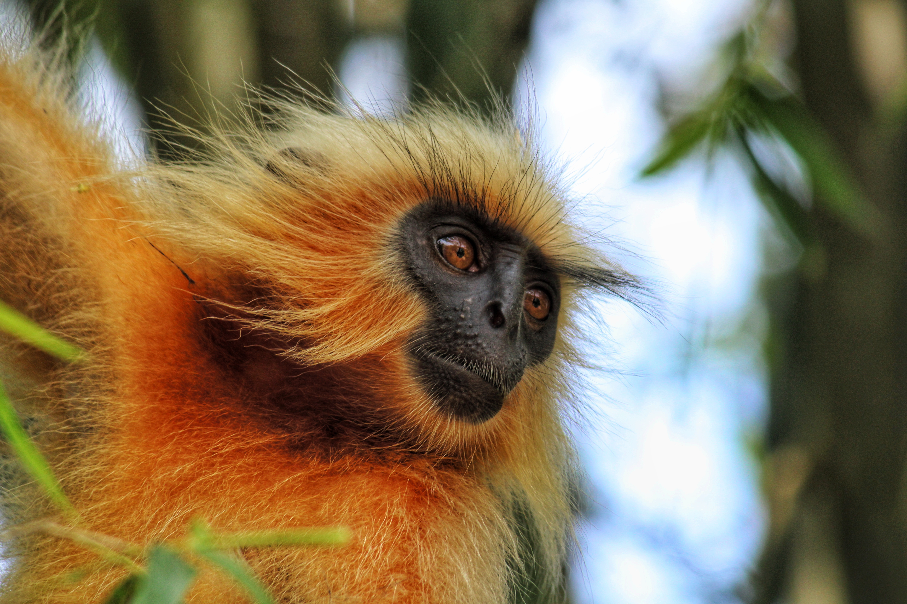

Western Hoolock Gibbon conservation
During my tenure as a Researcher with Aaranyak’s Primate Research & Conservation Division (PRCD), my work focused on the ecology and conservation of the Western Hoolock Gibbon (Hoolock hoolock) across Assam and Arunachal Pradesh. The research involved population surveys, call-count and acoustic monitoring, habitat assessment, GIS-based spatial analysis, and conservation planning, with fieldwork across diverse forest landscapes. Alongside research, I contributed to gibbon conservation education programmes, capacity-building and training of frontline forest staff, community outreach, and conservation planning workshops, gaining practical experience in linking field research with conservation action.

Human–macaque interactions
I explore what happens when macaques and people share the same spaces. My work considers patterns of conflict, public perceptions, cultural attitudes and management preferences. My aim is to understand these relationships carefully and support more informed, humane conservation responses.

Golden Langur fieldwork
My early primate research experience included field-based work with Golden Langurs in Assam. The Golden Langur (Trachypithecus geei geei) is an endangered primate endemic to western Assam and Bhutan, recognised by its distinctive pale-golden fur. My work examined how its habitat, movement and surrounding landscape shape its life. Field observation helps me connect species-focused research with the wider conservation needs of the forest.

Habitat, insects and overlooked life
My growing interests include habitat monitoring, remote sensing and the conservation of butterflies. I have loved observing butterflies since my master’s days, and I want my research and field practice to keep space for these often-overlooked indicators of ecosystem health.


Tools for listening to a landscape.
My field and technical interests include ecological surveys, direct observations, habitat assessment, spatial analysis and GIS-based fieldwork, remote sensing, QGIS, ArcMap, Landsat imagery, acoustic surveys of gibbons, photography and documentation, project coordination and field data management.
Publication details and selected research outputs will be added here later.